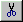
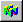

Frequently used operations have been assigned to buttons along the Tool Bar at the top of the NIFF Editor window.

The function assigned to each button is explained below:
| Create a new NIFF file | |
| Read a NIFF file into NIFF Editor. When this menu is selected, the File dialog window is displayed, enabling you to select a file or input the name of the NIFF file to open. | |
| Save the current contents of NIFF Editor by overwriting to the file with the same file name. | |
|  | Cut a node and copy it to the clipboard. |
| Copy a node to the clipboard. | |
| Paste the node that has been copied to the clipboard. | |
| Show large icons in the list displayed on the right side of the NIFF Editor window. | |
| Show small icons in the list displayed on the right side of the NIFF Editor window. | |
| Display the list as a simple list on the left side of the NIFF Editor window. | |
| Include information about each item in the list displayed on the left side of the NIFF Editor window. | |
| Convert the loaded NIFF file into a display list. | |
| Send the loaded NIFF file to IS-VIEWER64 for preview . | |
|  | Send the loaded NIFF file to IS-VIEWER64 for quick preview. |
| Display NIFF Editor version information. |
Show/hide the Tool Bar by toggling the "tool bar" item in the View menu.
By default, the tool bar is docked just below the menu. But it can be undocked and repositioned anywhere on the screen by dragging the button frame.